As you know, it's best practice to always use source control management (SCM) for your projects—even personal projects. Do you know that Android Studio has an amazing integration with Git for source control management? If you didn't know or don't have experience using it, then continue reading this post. Even if you have already used Android Studio's Git integration, you might still pick up some useful tricks in this post.
I'll show you the many features of Git support in Android Studio and also how easy it is to do the different Git operations (commit, push, pull, branch, etc.) from inside Android Studio.
In this tutorial, I'll walk you through the list of SCM features that are available in Android Studio. We'll look at the following areas:
- integrating a new Android Studio project with Git
- working with GitHub or Bitbucket
- exploring the Version Control window
- commits
- branches
- pushing and pulling from a remote repository
Prerequisites
To be able to follow this tutorial, you'll need:
- a basic understanding of the Git distributed version control system
- Android Studio 3.0 or higher
Fire up Android Studio and create a new project (you can name it GitApplicationDemo) with an empty activity called MainActivity.
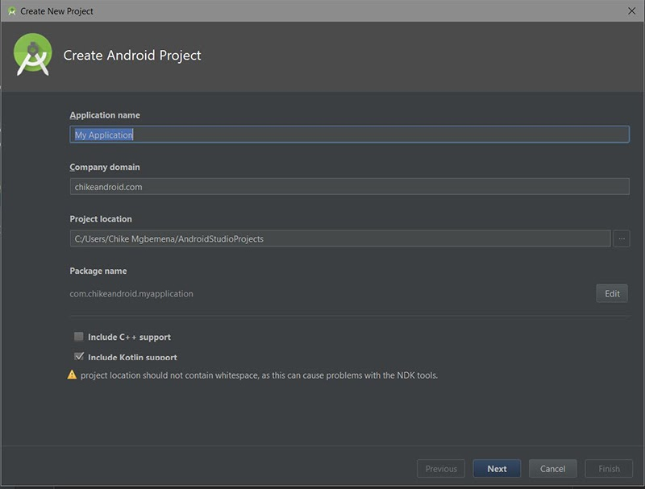
After your Android Studio project has been set up, click the VCS menu, hover on the Import into Version Control menu, and select Create Git Repository...
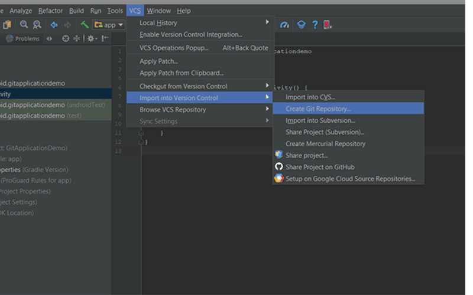
Then select the top parent folder of your Android Studio Project.
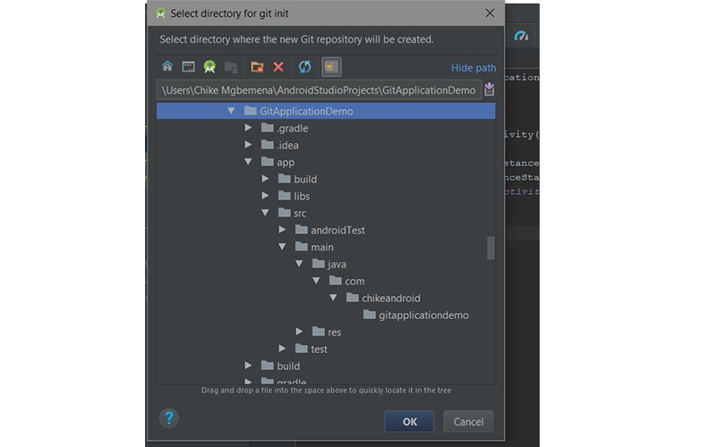
Click the OK button to initialize the project with Git. Under the hood, Android Studio executes the Git command:
git initAs a reminder, here's what this command will do:
This command creates an empty Git repository—basically a .git directory with subdirectories for objects, refs/heads, refs/tags, and template files. An initial HEAD file that references the HEAD of the master branch is also created.
An information dialog will pop up:

This is telling us about a file named vcs.xml inside the .idea folder. This folder just contains project-specific settings. Note that this is the format used by all recent IntelliJ IDEA versions.
Ideally, the files in the .idea/ should not reach Git—so you should add it to .gitignore.
By default, we're switched to the master branch. You can always view your project's current branch in the bottom-right corner of Android Studio.
You can easily work on any of your Android source code repository that is in a GitHub or Bitbucket account in Android Studio. Let me show you how to do that.
Navigate to File > New > Project from Version Control > GitHub.
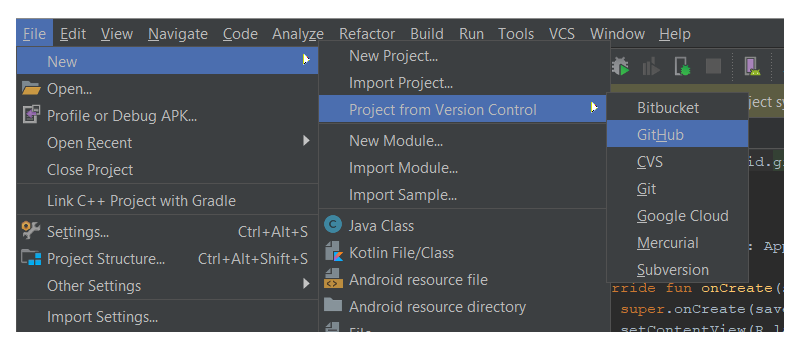
(If you want to work on a repo from Bitbucket, select Bitbucket instead. If you want to just clone a Git repo from the internet into your local machine, select the Git menu option.)
Next, enter your GitHub account credentials and click Login.
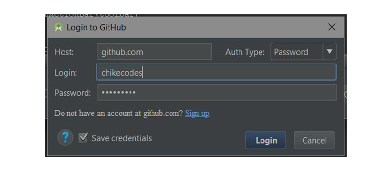
If the login was successful, the Clone Repository dialog will pop up. This dialog displays a drop-down containing a list of repositories on GitHub you currently own or have worked on.
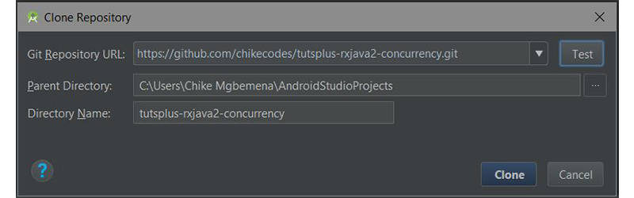
Click Clone to clone the repo to your local machine inside the already selected parent directory.
After successfully initiating our Android Studio project with Git, Android Studio will show the Version Control window. Click on the Version Control tab (at the bottom-left of Android Studio) and let's explore what we have there. Note that you can use Alt-9 to open up this window quickly.
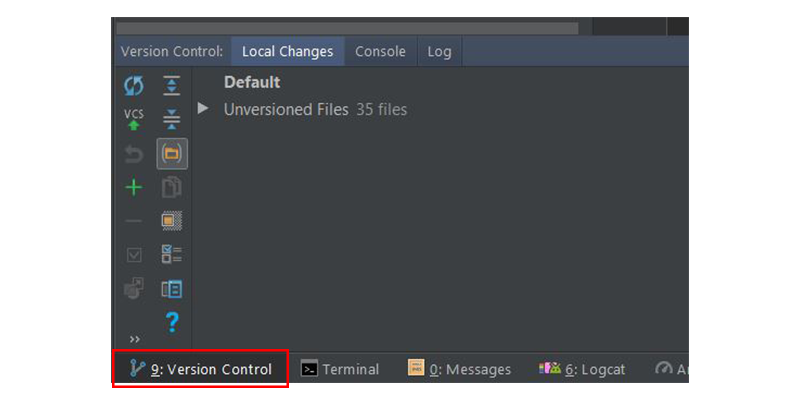
Inside this window, we have three different tabs: Local Changes, Console, and Log.
The Local Changes Tab
This shows the list of files that have been modified locally (on your own machine) and not yet committed to the repository.
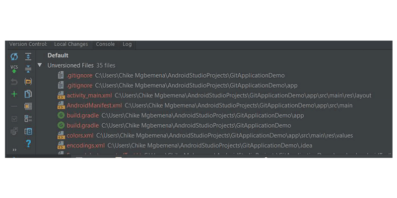
Let's take a look at the item toolbars available when you're in the Local changes tab.
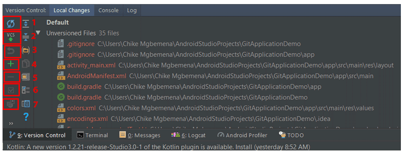
- Click this icon to refresh the status of your files in the current workplace. The shortcut is Control-F5.
- This icon when clicked will commit your current changes. The shortcut is Control-Alt-Z.
- Click this icon to roll back any selected changes.
- Click this icon to create a new changelist. Note that a changelist is a set of changes in files that represents a logical change in source code. The shortcut is Alt-Insert.
- Click this button to delete the selected changelist.
- To make a changelist active, simply click this icon.
- To move a selected file to another changelist, click this icon.
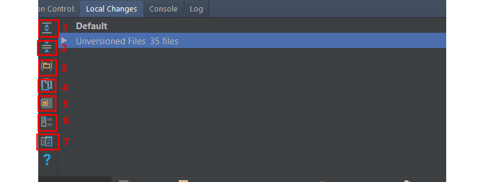
- Click this icon to expand to view all files.
- Click this icon to collapse all files.
- Click this icon to show the changed files which are grouped by folders.
- Click this icon to copy the path to the selected file to the System's clipboard.
- Click this icon to display the ignored files node with the list of existing files ignored by Git.
- Click this icon to set up the list of files that will be ignored by Git.
- Click this icon to open up the Preview Diff pane to compare the current file with the latest committed revision.
The Console Tab
Inside this tab, we see the result of performing Git-related commands. Note that you can't write Git commands inside this tab—do that in the terminal window in Android Studio instead.
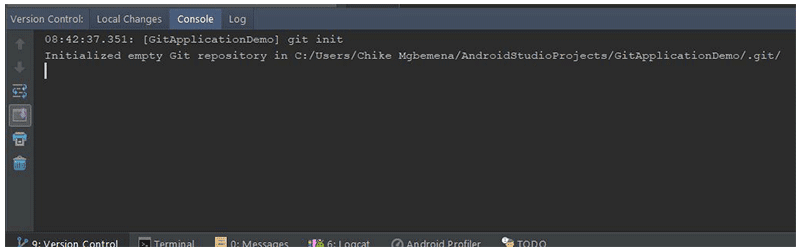
The Log Tab
This tab shows up all changes that were committed to all branches of the local and remote repository. Inside this tab, you can browse commits to any branch.
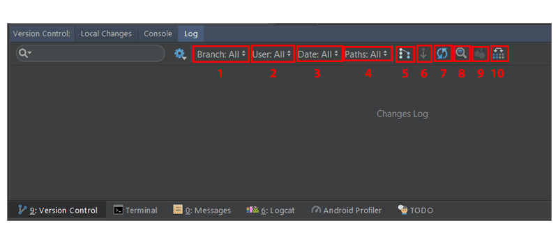
The search box is used to search for commits that have the entered string or a regular expression.
- This dropdown that is used to filter commits by branch. To view all local and remote commits, just select All (the default).
- To filter commits by the author, use this dropdown list. You'll have to type the author's name to view their commits. Select All to view commits by all users.
- Use this dropdown to filter commits by a time range or for a specific date. To be specific on the date, simply click Select and choose the date. Select All to view commits made on all dates.
- Use this dropdown to filter commits by the path of modified files.
- This button (IntelliSort) enables a more convenient way to see merges, by first displaying the incoming commits, directly below the merge commit.
- If this button is enabled, long branches are displayed in full, even if there are no commits in them.
- Use this button to refresh the list of commits in the project.
- To go to a hash, tag, or branch, simply use this button.
- Click this button to apply changes from the selected commit to the current branch.
- Click this button to highlight the commits from the selected branch that have not yet been applied to the current branch.
You can learn more about the Version Control tool window in the IntelliJ IDEA documentation.
You'll notice that when we set up the Git integration with our Android Studio project, our file name's colour became brown. According to the official IntelliJ IDEA documentation, for files with brown labels:
File exists locally, but is not in the repository, and is not scheduled for adding.
Let's now see how to make a commit in Android Studio. But first, we need to add our changes in the working directory to the staging area. In the console, we would use the git add command.
git add <file> || <directory>But we can do this right from within Android Studio. Select the Unversioned Files drop-down in the Local Changes tab, right-click and go to Git > Add or use Control-Alt-A. Remember that selecting the root folder will add everything inside it to the staging area.
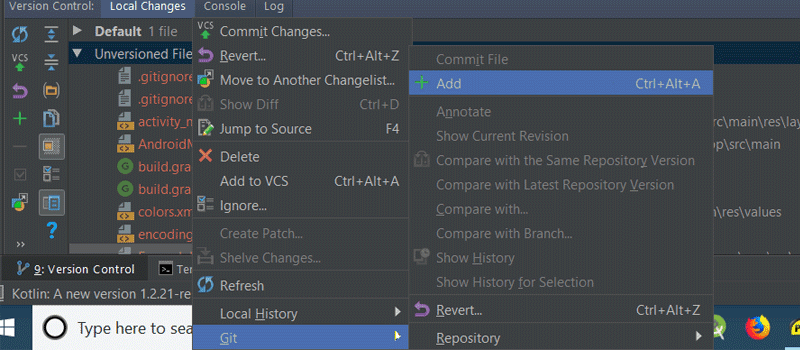
Now, you will observe that your file label colours have changed from brown to green. Here is what the IntelliJ IDEA documentation says about file names that are coloured green:
File is scheduled for addition to the repository.
To learn more about the different colours a file name can have depending on the file status in Android Studio (IntelliJ IDEA), check out the file status highlights documentation.
To finally commit our changes, click on the commit changes button in the Local Changes tab, and the Commit Changes dialog will pop up.
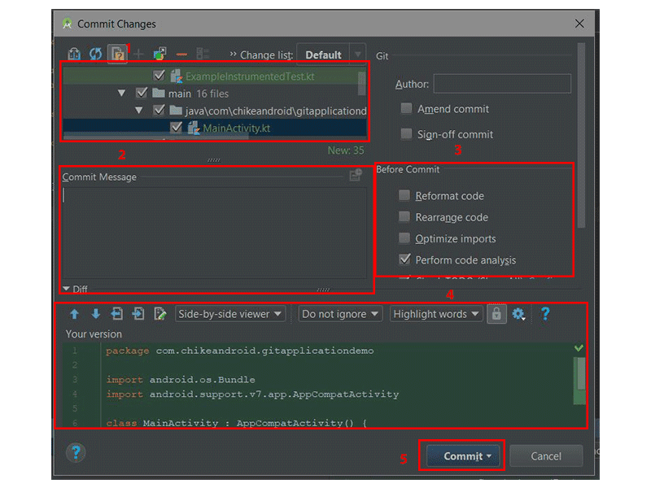
- Here we can select or unselect files that should be included in this commit. By default, all staged files are checked.
- Write your commit message inside here. If you have a previously written commit message, it will show here as a default.
- Select operation(s) to perform before committing to Git.
- Side-by-side comparison of the changed files.
- With this dropdown button, you can either commit and push or just commit.
So to make a commit, let's write a commit message:
Initial commitSelect Commit in the Commit drop-down to finally commit your changes. Note that you can use the shortcut Control-K to commit changes anytime from Android Studio.
If you now revisit the Local Changes tab in the Version Control window, you won't see any of your files listed there anymore—because we successfully committed them to our local repo.
Note that you can also navigate to VCS > Git > Commit File... to make a commit and VCS > Git > Add to add a file for staging. In addition, you can click the commit changes icon in the main top toolbar in Android Studio to make a quickly make a commit (or commit and push).
In our MainActivity.kt class, I did a simple modification in the class by overriding onResume(). You will notice that the file name colour after the modification is now blue; this means that we have modified the file.
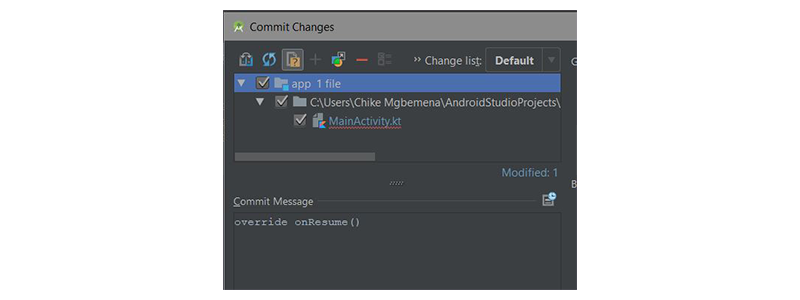
Viewing the Commit Log
Now, revisit the Version Control window once again and go to the Log tab. What you will now see are the commits that have been made to this project. To get more details on any commit, just click it.
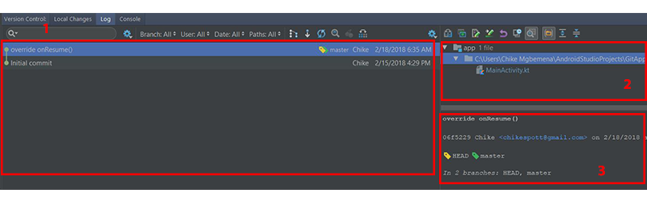
- This main pane shows all commits on the project according to the filter selected. In other words, this shows us the commit history.
- This pane displays the files and folders affected by the commit selected in the commits history pane.
- This pane displays more details about the selected commit.
By right-clicking on a commit, you can also see a menu that allows you to copy the revision number, create a patch, check out a revision, branch from that commit, create a new tag, and reset the current branch to that commit.
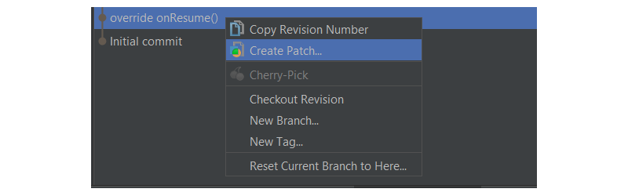
Let's now look at how we can view what code was added, edited, or removed. In other words, we want to check out—in more detail—the changes made.
Simply click on the show diff icon above the window where the files affected by the commit are shown. A shortcut is to use Control-D or to double-click on the file or folder.
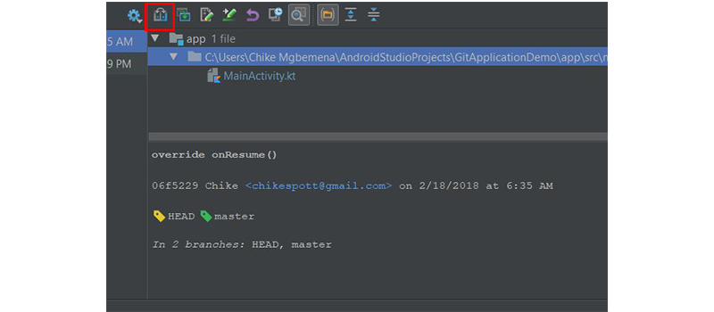
What you'll see is a Show Diff dialog, showing the differences between the previous commit and the selected commit.
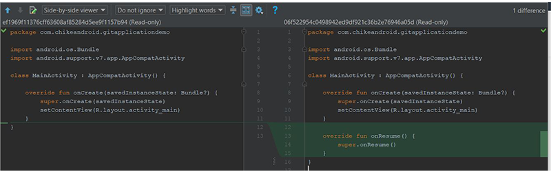
A green coloured region in the file highlights lines that were added to file—you should see some if you're following along. Grey regions highlight lines that were removed. And blue highlights lines that were changed. Try to explore the filters and icon buttons available at the top of the Show Diff dialog to learn more about it.
Note that you can also see changes to images in the Show Diff dialog!
By right-clicking on a file, you also have the option to see the difference between the last commit and the current commit of that file—show diff (shortcut Control-D). You can also edit the source (F4), open the version in the repository, revert selected changes, show history for the revision, and show details of the commit for that file.

The master branch will be current by default. However, it's recommended to always branch out from the master and do your work on a separate, feature-specific branch. When you are done coding your feature (and when you have tested your changes), you then merge your changes to the master branch.
Let's see how to create a branch from the master.
Go to the bottom-right corner of Android Studio and click on the Git: master drop-down menu.
Click on the New Branch button.
Enter the branch name. In our case, use dev.
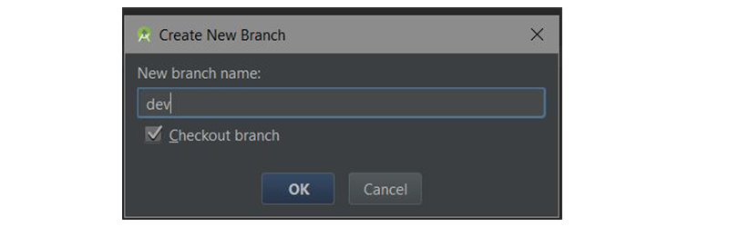
Finally, click the OK button for Android Studio to automatically create the dev branch and also checkout to that branch.
We are now currently in the dev branch. As you can see below:
Under the hood, Android Studio executes the command:
git checkout -b devNote that we can also create a new branch by navigating to VCS > Git > Branches > New Branch.
Inside the dev branch, just create a basic activity ProfileActivity.kt and its layout files and commit your changes. We are going to see how to merge dev to master right inside Android Studio.
Go and check out from the current branch (dev) to the master branch (meaning we're switching from dev to the master).
Merge, Checkout, Delete, Compare, Rename Branch
If you click on a branch, you'll be shown some operations you can perform on that branch. The operations include merging, comparing two branches, renaming the branch, rebasing, checking out, and deleting the branch.
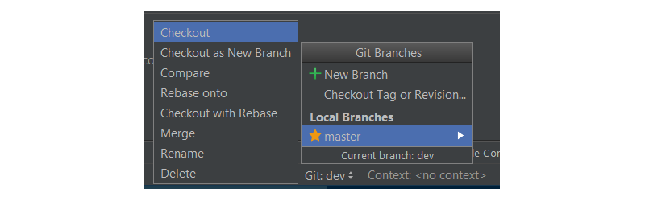
We're going to look at how to merge a branch in this post. In the master branch, merge the dev branch in by navigating to the dev branch and clicking Merge in the menu.
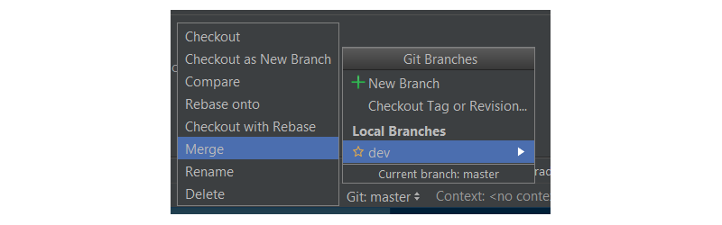
That's it! We've now successfully merged our dev branch to the master branch.
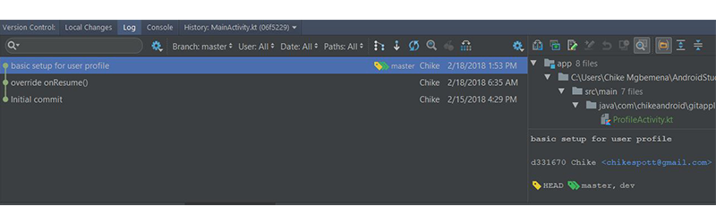
Behind the scenes, Android Studio executes the command:
git merge devNote that we can also do advanced merging right inside Android Studio. We are able to specify the merging strategy (Resolve, Recursive, Octopus, Ours, or Subtree) or not to use the fast-forward merging mode.
To set this up when merging, navigate to VCS > Git > Merge Changes...
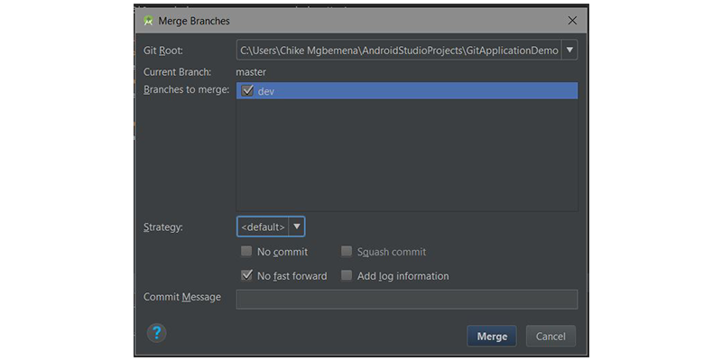
Here you can select multiple branches to merge, select the merge strategy, and write a commit message. It's highly recommended you really understand these merging strategies and whether to use the fast forward mode before merging.
Every Git project should have a remote or central repository where other developers can collaborate on the project from anywhere in the world. In Android Studio, it's also possible to push our commits or changes to a remote repository. To do that, navigate to VCS > Git > Push...
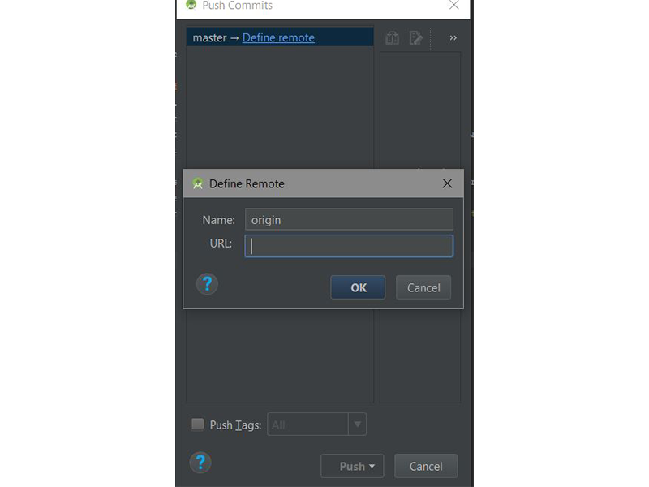
Here we can add the remote repository URL by clicking on the Define remote link in the Push Commits dialog that pops up. Finally, click on the Push button when done! A shortcut is to use Control-Shift-K.
Android Studio executes the following command behind the scenes:
git pushYou can also quickly make a commit with a push by clicking on the commit changes icon in the main toolbar or using Control-K.
To update your project (to make a pull) with the latest changes from the remote repository (you should have already added the remote origin), navigate to VCS > Git > Pull. This will automatically update your Android Studio project with the most recent code from the remote repository.
To initiate a pull, you can also click on the update project icon in the main toolbar or use the Control-T shortcut.
If you do this, Android Studio will execute the Git pull command behind the scenes:
git pullNote that if you encounter a merge conflict while pulling or pushing, Android Studio will show a really handy merge conflict dialog which will help you resolve that conflict.
In this tutorial, you learned how easy it is to perform different Git operations you might typically do on the command line or in the terminal. Using Android Studio's Git tools makes it easier and more efficient to collaborate on Android projects with other developers.